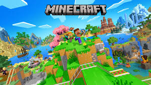
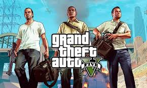

Agora, queridos(as) leitores(as), chegamos ao nosso:
Aqui vamos ver um top 4 geral dos jogos, seja desse ano ou dos anos passados e saber o por que eles entram aqui. Lembrando que você pode concordar com esse ranking ou não, pode ser que os jogos aqui, na sua visão, não mereçam estar aqui de fato ou que estejam no lugar errado.
O querido jogo quadrado que conquista o coração de uma grande parte dos jogadores, Minecraft chegou no mundo dos games em 17 de maio de 2009 e vem ganhando o carinho dos fãs até os dias de hoje.
Creio que ele merece estar em 1° lugar por conta da sua imensa popularidade contínua, liberdade criativa e vendas massivas, sendo um dos jogos mais vendidos de todos os tempos.

Também outro jogo muito popular e que seja difícil um jogador não ter ao menos ter ouvido falar, Fortnite é bastante conhecido por seus eventos ao vivo e pela comunidade gigantesca. O jogo é um fenômeno dos games da Epic Games, que começou como um jogo de sobrevivência e evoluiu para uma plataforma com o popular modo Battle Royale, onde 100 jogadores lutam para ser o último sobrevivente em uma ilha, coletando armas e construindo estruturas. Além disso, o universo Fortnite expandiu-se para incluir outras experiências como LEGO Fortnite (sobrevivência e construção), Fortnite Festival (ritmo), Rocket Racing e um criativo modo onde os jogadores criam seus próprios jogos.
Um dos jogos mais vendidos e jogados de todos os tempos, com uma longevidade impressionante e um mundo aberto vasto
rand Theft Auto V (GTA V) é um jogo de ação e aventura de mundo aberto que segue as histórias entrelaçadas de três criminosos em Los Santos (baseada em Los Angeles): Michael, um assaltante de banco aposentado; Franklin, um jovem gangster de rua; e Trevor, um traficante psicopata, que se envolvem em assaltos perigosos enquanto lidam com criminosos, o governo e o submundo do crime, tudo isso enquanto exploram um vasto mapa e jogam o universo online GTA Online.
